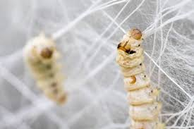
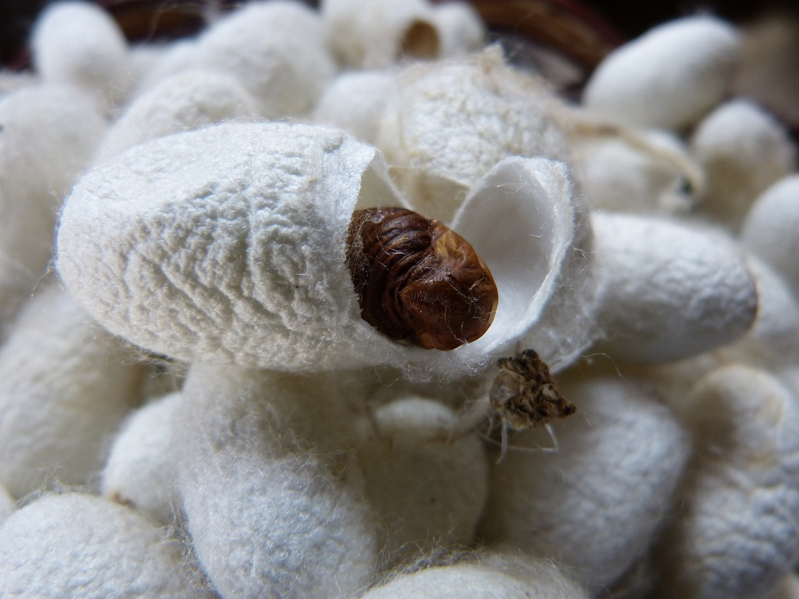

Sobre a Seda
A seda é uma fibra natural produzida pelos casulos dos bichos-da-seda. É conhecida por seu brilho, suavidade e resistência, sendo usada em roupas de alta qualidade e decoração.
Processo de Produção
- Criação do Casulo: Os bichos-da-seda produzem o casulo para se protegerem durante a fase de transformação em mariposas.
- Coleta: Os casulos são coletados antes que os bichos-da-seda se transformem em mariposas, preservando a fibra.
- Fiação: Os casulos são mergulhados em água quente
- Roupas: No fim de todos os processos as roupas são feitas e distribuidas para as lojas.